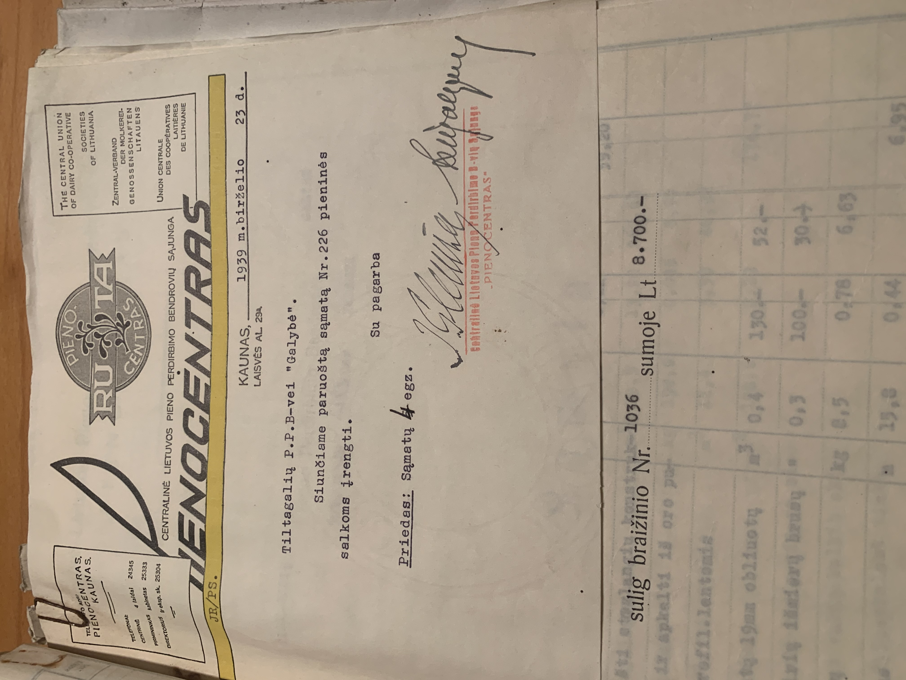
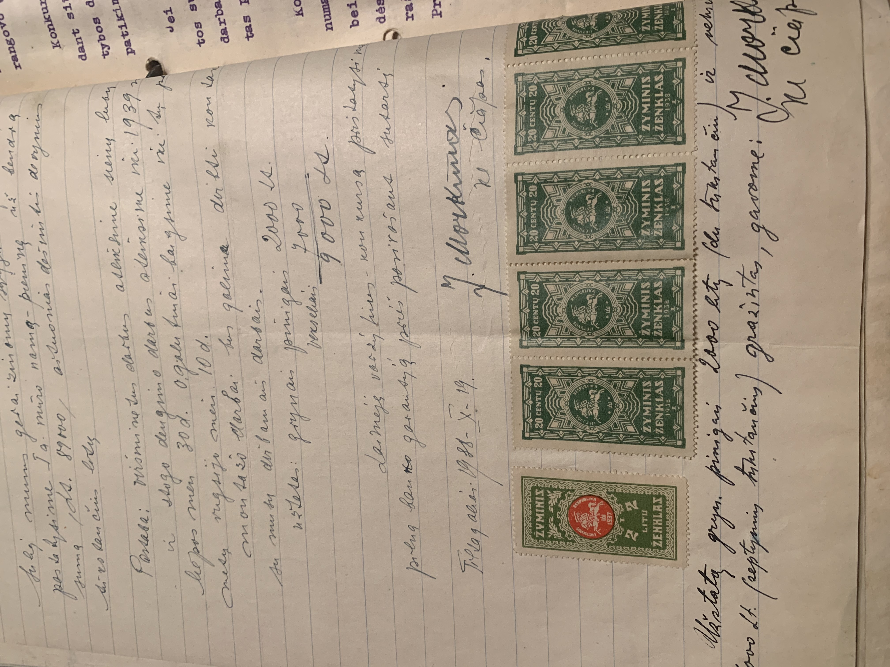
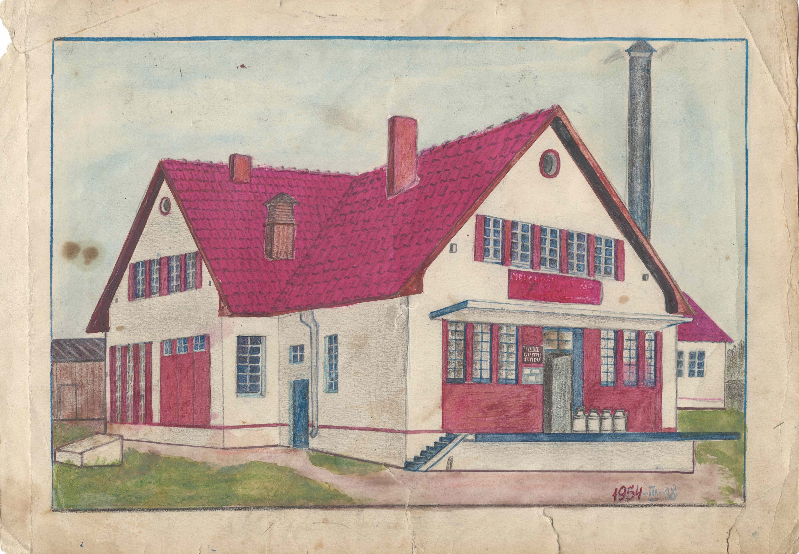
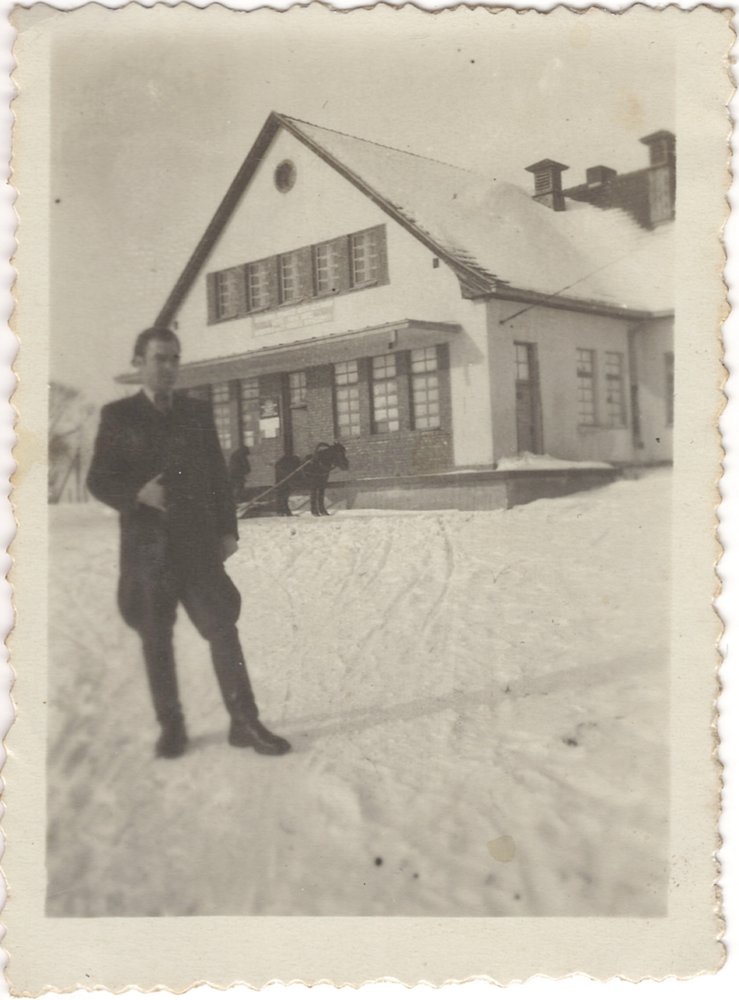
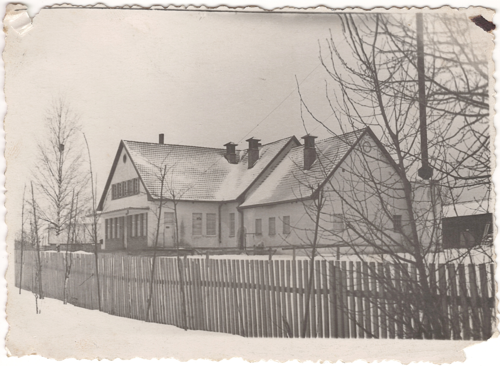
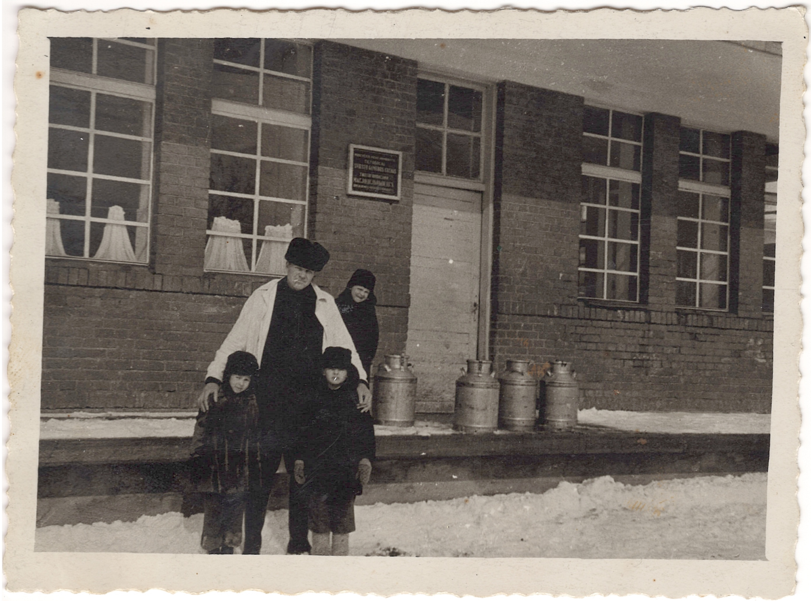
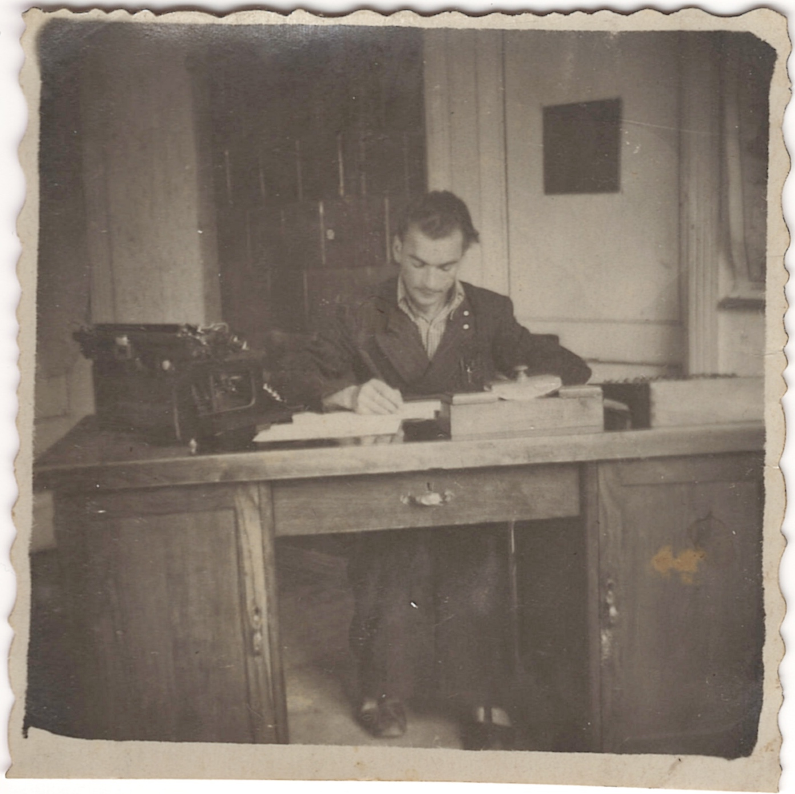
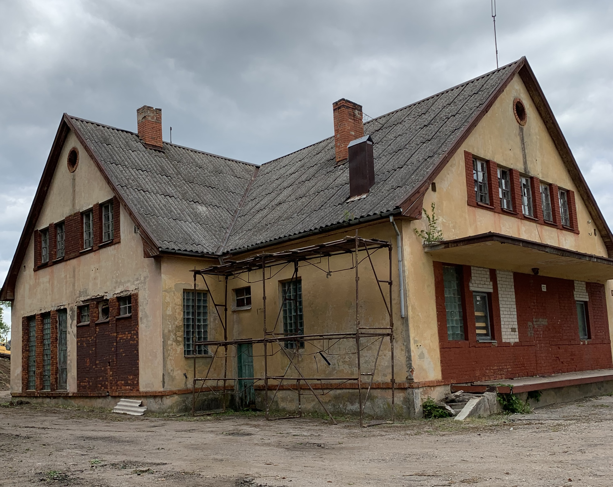
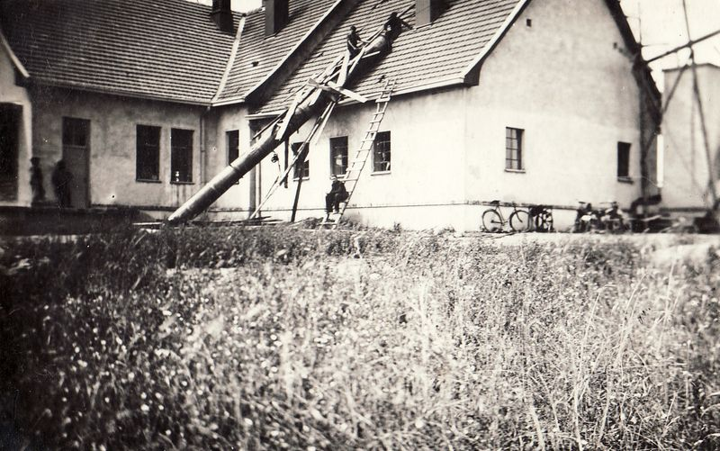

Tiltagalių pieninės vaizdų galerija
Originalūs 1937–1939 m. „Pienocentro“ dokumentai, archyviniai brėžiniai, autentiškos mūro detalės bei pastato atstatymo etapai.
 Projektas
Projektas
Projektas Nr. 1036 (1937 m.)
Originalus architekto B. Elzbergo techninis brėžinys ir situacijos planas Tiltagalių pieninei.
Archyvinis brėžinys
DokumentasPienocentro raštas (1939 m.)
Centralinės sąjungos oficialus raštas Tiltagalių „Galybei“ dėl pieninės šalkų įrengimo sąmatos.
R. Židonio nuotr.
ArchyvasRangos konkursas (1938 m.)
Originalus rankraštinis rangovų varžymosi aktas su oficialiais tarpukario Lietuvos žyminiais ženklais.
R. Židonio nuotr. Istorinis kadras
Istorinis kadras
Pieno suvežimas
Autentiškas vaizdas iš tarpukario kaimo kasdienybės – pieno bidonų gabenimas į apylinkės pieninę.
Istorinė kronika
MūrasRaudonų plytų fasadas
Išsaugota autentiška fasado geometrija su taisyklingais plytų skliautais.
R. Židonio nuotr.
DetalėArkinis skliautas
Meistrų rankomis sumūrytas apskritas plytų lankas, būdingas B. Elzbergo braižui.
R. Židonio nuotr. Vidus
Vidus
Pagrindinė salė
Erdvi gamybinė patalpa su plačiais langais, pro kuriuos patenka natūrali dienos šviesa.
R. Židonio nuotr.
KonstrukcijaVidaus pertvaros ir arkos
Mūrinės vidaus sienos, atskyrusios pieno surinkimo, separavimo ir garo katilo patalpas.
R. Židonio nuotr.
PatalposTechnologinė erdvė
Patalpų išplanavimas, pritaikytas garo vamzdynų ir technologinių įrenginių montavimui.
R. Židonio nuotr. Vidinė arka
Vidinė arka
Vidinė erdvės plastika
Mūrinė arka tarp gamybinių koridorių, išlaikanti vieningą pastato stilių.
R. Židonio nuotr.
FaktūraAutentiškos plytos
Tarpukario plytinėse degtos masyvios molio plytos, atlaikiusios daugiau nei 80 metų.
R. Židonio nuotr. Inžinerija
Inžinerija
Kampų sutvirtinimai
Taisyklinga kampinė plytų rišimo technika, užtikrinusi pramoninio pastato ilgaamžiškumą.
R. Židonio nuotr.
AtstatymasRestauravimo pradžia
Sudėtingas pastato gelbėjimo etapas: išvalytos erdvės, sutvarkytos ir apsaugotos sienos.
R. Židonio nuotr.Atgimusi pieninė
Šiuolaikinis sutvarkyto pastato vaizdas – išsaugotas istorinis siluetas ir tūris.
R. Židonio nuotr.Pastatas ir aplinka
Pieninė Tiltagalių kaimo kraštovaizdyje prie Žaliosios gatvės.
R. Židonio nuotr. Archyvas
Archyvas
Istorinis liudijimas I
Archyvinis krašto pienininkystės dokumento fragmentas.
Archyvinė medžiaga
ArchyvasIstorinis liudijimas II
Tarpukario „Pienocentro“ sistemos organizacinė detalė.
Archyvinė medžiaga Fiksacija
Fiksacija
Paveldo tyrimas
Istorinės pastato būklės fiksacija prieš pradedant restauravimo darbus.
Archyvinė medžiaga